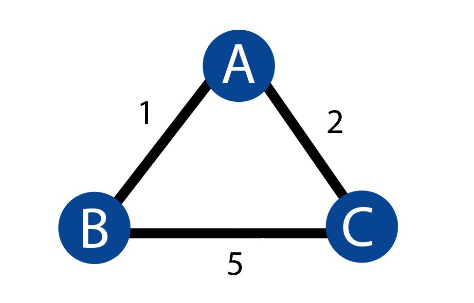

Distance Vector (DV) algorithm is iterative, asynchronous, and distributed
- iterative in that this process continues until no more information is exchanged between neighbors
- asynchronous in that it does not require all of the nodes to operate in lockstep with each other
- distributed in that each node gets information from one or more of its directly attached neighbors
Bellmond Ford Least Cost Path
dx
(y) = minv
{c(x,v) + dv
(y)}
- dx(y) is cost of the least-cost path from node x to node y.
- minv in the equation is taken over all of x's neighbors
- The least-cost path from v to y cost will be c(x,v) + dv(y)
With the DV algorithm, each node maintains the following routing information:
- For each neighbor v, the cost c(x,v) from x to directly attached neighbor v
- Node x's distance vector, that is, Dx = [Dx
(y): y in N], containing x's estimate of
its cost to all destinations, y, in N
- The distance vectors of each of its neighbors

Each nodes shortest path vector is originally set to the direct links length. There is are shorter paths between
nodes but they dont know about them. In distance vecotr routing every node sends its vectors
information to adjacent nodes. Each node then updates itr routing table based on the Belmond Ford Equation.
The updated routing table looks like this
- node:(a,b,c)
- a:0,1,2
- b:1,0,3
- c:2,3,0